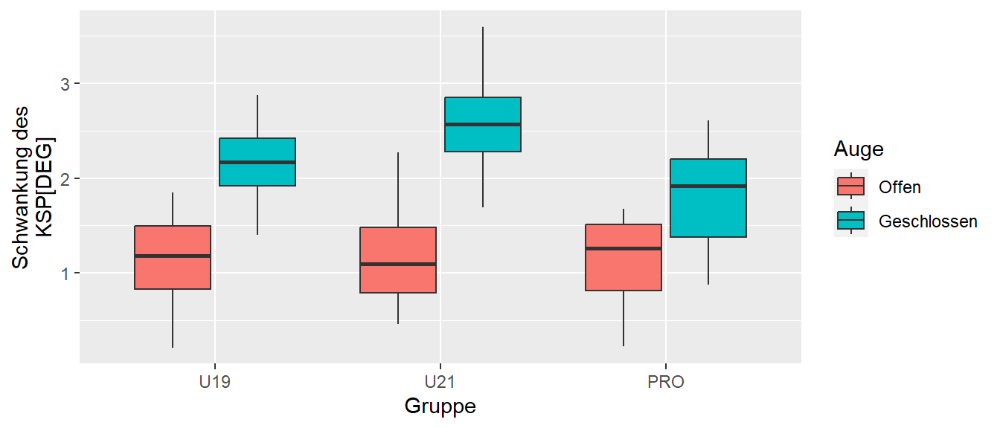
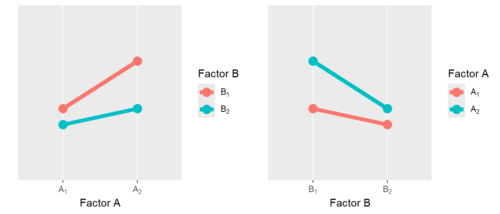
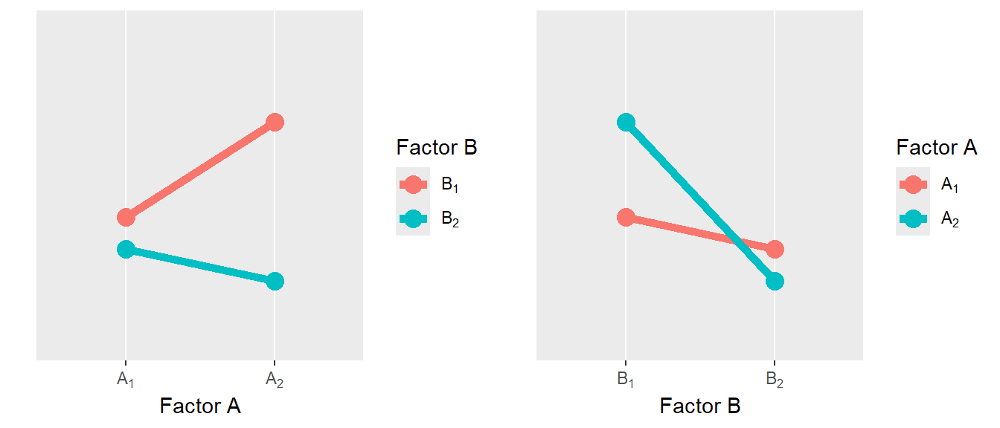
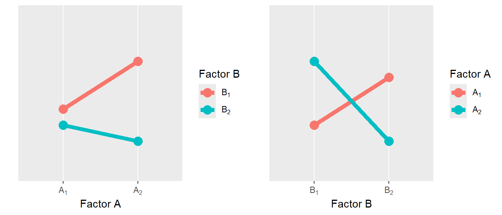
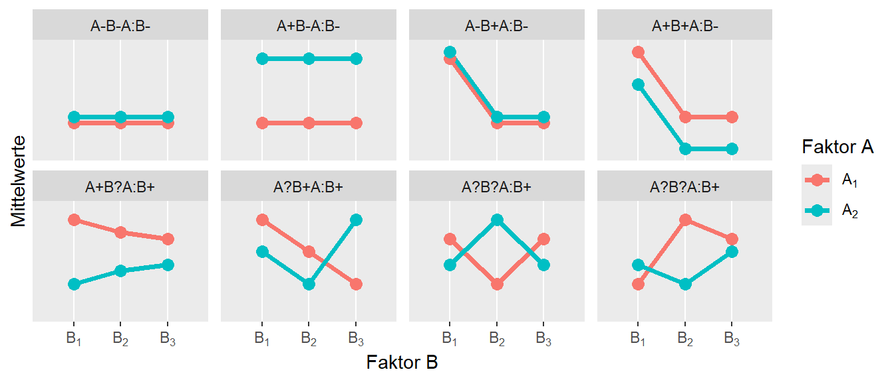
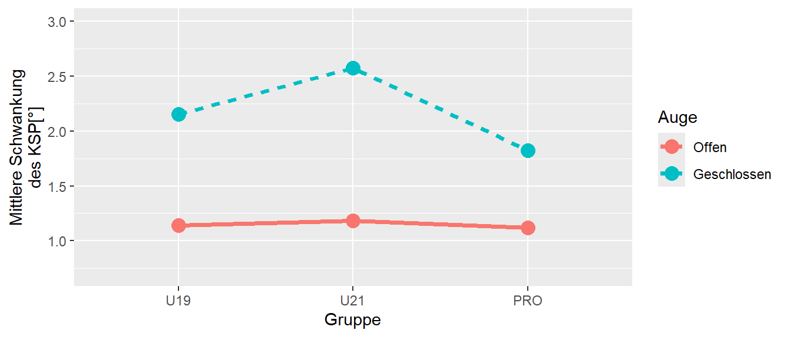
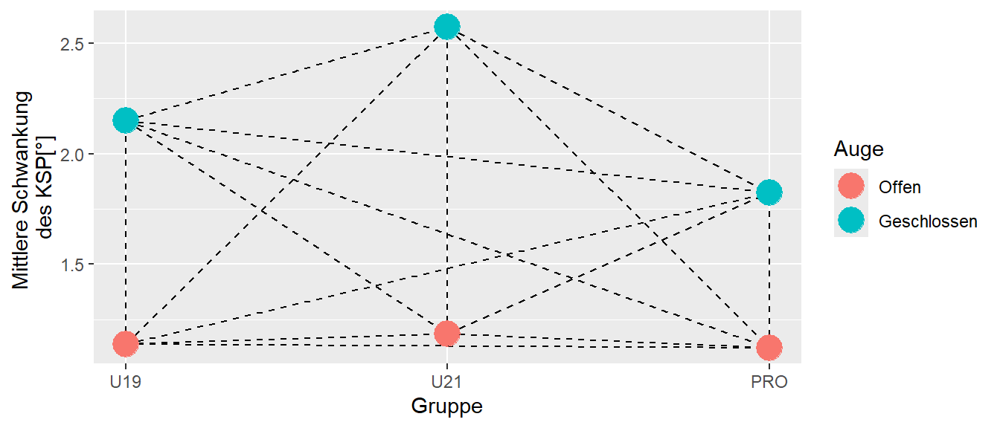
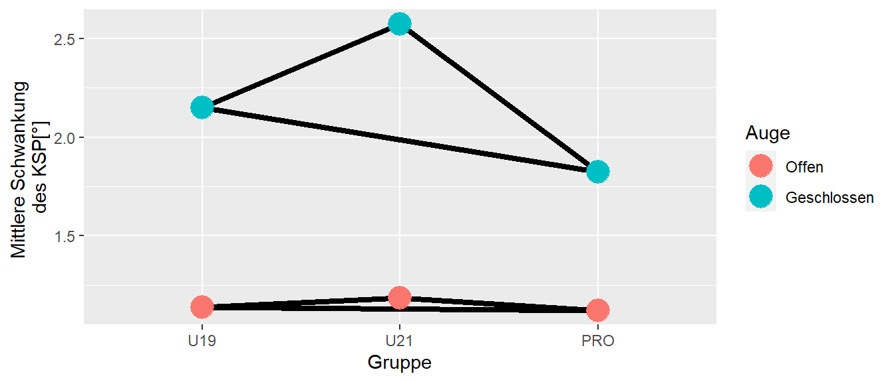
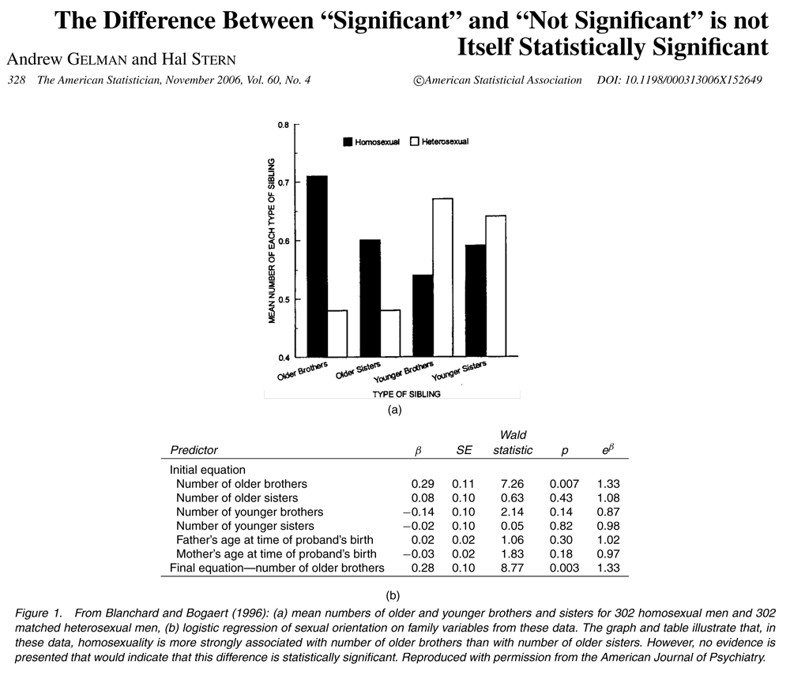
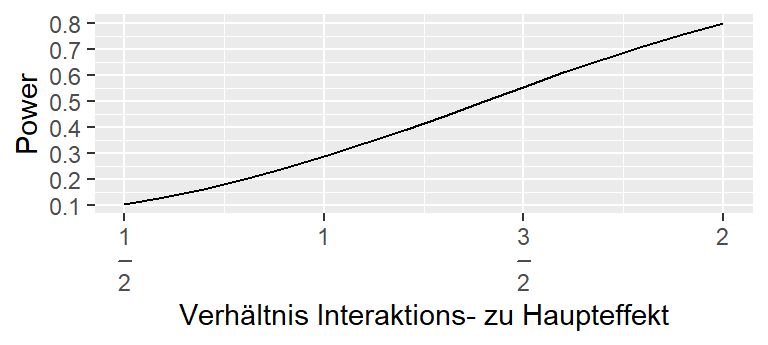

25 Completely Randomized Factorial Design
Nachdem wir uns im vorhergehenden Abschnitt mit dem Completely Randomized Design Untersuchungsdesigns angeschaut haben, bei dem nur eine unabhängige nominale Variable variiert wurde, schauen wir uns jetzt den Fall an, wenn wir den Einfluss zweier nominale unabhängige Variablen auf eine abhängige Variable untersuchen wollen. Wie wir sehen werden führt dies zu einem zusätzlichen Effekt dem Interaktionseffekt. Inhaltlich bedeutet dies nicht allerdings erst mal gar nichts Neues, da wir Interaktionseffekt schon im Zusammenhang mit der multiplen Regression kennengelernt haben und die Interpretation daher auch nichts neues bedeutet. Daher wir ein Hauptaugenmerk in diesem Kapitel darin liegen, wir wir Interaktionseffekte interpretieren können bzw. welchen Einfluss diese auf die Interpretation von Haupteffekten bedeutet und welchen Einfluss Interaktionseffekte auf die Anzahl der notwendigen Replikationen haben um eine gewünschte Power zu gewährleisten. Generell wenn mehr als ein nominaler Faktor an dem Untersuchungsdesign beteiligt ist, dann wir von einem Completely Randomized Factorial Design (CRFD) gesprochen.
Die Annahmen beim CRDF sind die gleichen wie auch beim CRD. Seien ein CRFD mit zwei Faktoren \(A\) und \(B\) gegeben die jeweils \(p\) bzw. \(q\) Faktorstufen haben. Dann gelten die folgenden Annahmen.
- Unabhängige EUs
- Die EUs sind in die \(p\times q\) Gruppen eingeteilt worden
- Die Werte in jeder Gruppe sind Normalverteilt \(Y_{ijk} \sim \mathcal{N}(\mu_{ij}, \sigma^2)\) mit der gleichen Varianz \(\sigma^2\)
In der Literatur im Zusammenhang mit einem CRFD oft der Term Zellen verwendet. Dieser bezeichnet die jeweiligen Kombinationen der Faktorstufen. Sei zum Beispiel \(p = 3\) und \(q = 2\) dann erhalten wir die folgende Anordnung von Zellen (siehe Tabelle 25.1)
| \(A_1\) | \(A_2\) | \(A_3\) | |
| \(B_1\) | \(A_1B_1\) | \(A_2B_1\) | \(A_3B_1\) |
| \(B_2\) | \(A_1B_2\) | \(A_2B_2\) | \(A_3B_2\) |
Faktoren werden als gekreuzt bezeichnet, wenn alle Kombinationen der Faktoren beobachtet wurden.
25.1 Das statistische Modell im CRFD
Das statistische Modell im CRFD besteht in einer natürlichen Erweiterung des Modells für ein CRD. Die Modellstruktur ist die folgende:
\[\begin{equation} Y_{ijk} = \mu + \alpha_i + \beta_j + (\alpha\beta)_{ij} + \epsilon_{ijk}, \qquad \epsilon_{ijk}\sim \mathcal{N}(0,\sigma^2) \label{eq-ed-crfd-model} \end{equation}\]
\(i\) und \(j\) sind die Indikatoren der jeweiligen Fakorstufen für die Faktoren \(A\) und \(B\), während \(k\) der Indikator der jeweiligen EUs (Replikation) ist. \(\mu\) bezeichnet den Gesamtmittelwert und \(\alpha_i\) ist der Einfluss der \(i\)-ten Stufe von Faktor \(A\), \(\beta_j\) ist der Einfluss der \(j\)-ten Stufe von Faktor \(B\), und \((\alpha\beta)_{ij}\) bezeichent den Einfluss der Kombination der Faktoren \(A\) und \(B\) also den Interaktionsfaktor. Wenn wir das Modell im Sinne der vorher eingeführten Herleitung aus der multiplen Regression betrachten, dann werden die Effekte im Modell über Indikatorvariablen abgebildet.
Die folgenden Herleitung sind für ein balanciertes Modell, bei dem die Zellbesetzungen alle gleich sind, z.B. \(r\). In diesem Fall gilt für den Indikator \(k, k = 1, \ldots, r\) oder anders ausgedrückt, \(r_{ij} = r\) für alle \(i,j\).
Um wieder den uns bekannten Ansatz von Modellvergleichen durchzuführen, stellen wir wiederum eine Modellhierarchie auf. Das full model ist das eben beschriebene Modell (siehe Formel \(\eqref{eq-ed-crfd-model}\) während die reduzierten Modelle die folgende Reihenfolge ermöglichen:
\[\begin{align} Y_{ijk} &= \mu + \alpha_i + \beta_j + \epsilon_{ijk} \label{eq-ed-crfd-additiv} \\ Y_{ijk} &= \mu + \alpha_i + \epsilon_{ijk} \qquad (\textrm{alternativ}: Y_{ijk} = \mu + \beta_j + \epsilon_{ijk})\\ Y_{ijk} &= \mu + \epsilon_{ijk} \end{align}\]
Dadurch, dass zwei unabhängige Variablen vorhanden sind, können auch zwei verschiedene Abfolgen durchlaufen werden. Nach dem Wegfall des Interaktionseffekts \((\alpha\beta)_{ij}\) kann entweder erst \(\alpha_i\) oder \(\beta_j\) weggelassen werden. Tatsächlich macht die Reihenfolge keinen Unterschied, wenn die Stichprobengröße \(r_i\) in allen Zellen gleich ist. Entsprechend gilt dies nicht mehr, wenn die Stichprobengrößen sich unterscheiden.
Hinweis
Eine Besonderheit die in der Literatur auftauchen kann ist die Modellformulierung in Formel \(\eqref{eq-ed-crfd-additiv}\). D.h. das Modell ohne den Interaktionsfaktor. Dieses Modell kann in manchen Fälle auch das full model sein, wenn davon ausgegangen werden kann, dass keine Interaktionseffekte zwischen den beiden Variablen vorhanden sein können bzw. vorhanden sind. In der Literatur wird dieses Modell als additives Modell bzw. two-way main effects model bezeichnet.
Die statistischen Hypothesen sind wenig überraschend die üblichen mit der Annahme von keinen Effekten unter der \(H_0\) und entsprechend Effekten unter der \(H_1\). Entsprechend ist die Formulierung der \(H_0\)-Hypothesen für die Hauptfaktoren \(A\) und \(B\) bzw. den Interaktionseffekt \(A\times B\):
\[\begin{align*} \alpha_1 &= \alpha_2 = \ldots = \alpha_p = 0\\ \beta_1 &= \beta_2 = \ldots = \beta_q = 0 \\ (\alpha\beta)_{11} &= (\alpha\beta)_{12} = \ldots = (\alpha\beta)_{pq} = 0 \\ \end{align*}\]
bzw. die entsprechenden Alternativhypothesen \(H_1\), dass sich mindestens zwei Faktorstufen \(\alpha_i\) bzw. \(\beta_j\) oder Interaktionskombinationen \((\alpha\beta)_{ij}\) voneinander unterscheiden. Unter dem Ansatz des Modellvergleichs sind die Hypothesen wieder dahingehend zu interpretieren, dass die Hinzunahme bzw. das Weglassen einer Modellkomponente eine statistisch signifikante Verbesserung des Modells nach sich zieht bzw. eben nicht.
Die alternative aber äquivalente Herleitung der Hypothesen im Sinne einer Variananalyse führt zu einer Unterteilung der Gesamtvarianz in einzelne Komponenten auf der Grundlage der verschiedenen Modellkomponenten.
\[\begin{equation} SS_{\text{total}} = SS_{\text{Faktor }A} + SS_{\text{Faktor }B} + SS_{A\times B} + SS_{\text{error}} \label{eq-ed-crfd-sstotal} \end{equation}\]
Es ergibt sich die folgende \(F\)-Tabelle bei einer Zellbesetzung mit \(r\) Replikationen.
| Term | \(df\) | \(SSQ\) | \(MSQ\) | \(F\) |
|---|---|---|---|---|
| Faktor \(A\) | \(p-1\) | \(ssA\) | \(\frac{ssA}{p-1}\) | \(\frac{msA}{msE}\) |
| Faktor \(B\) | \(q-1\) | \(ssB\) | \(\frac{ssB}{q-1}\) | \(\frac{msB}{msE}\) |
| \(AB\) | \((p-1)(q-1)\) | \(ssAB\) | \(\frac{ssAB}{(p-1)(q-1)}\) | \(\frac{msAB}{msE}\) |
| Error | \(n - pq\) | \(ssE\) | \(\frac{ssE}{n-pq}\) |
\(ssE = \sum_i \sum_j \sum_k (y_{ijk} - \bar{y}_{ij.})^2\)
\(sstot = \sum_{i}\sum_{j}\sum_k y_{ijk}^2 - n\bar{y}_{...}^2\)
\(ssA = qr\sum_i \bar{y}_{i..}^2-n\bar{y}_{...}^2\)
\(ssB = pr\sum_j \bar{y}_{.j.}^2-n\bar{y}_{...}^2\)
\(ssAB = r\sum_i\sum_j \bar{y}_{ij.}^2 - qr\sum_i\bar{y}_{i..}^2 - pr\sum_j\bar{y}_{.j.}^2+n\bar{y}_{...}^2\)
\(sstot = \sum_{i}\sum_{j}\sum_k y_{ijk}^2 - n\bar{y}_{...}^2\)
\(ssA = qr\sum_i \bar{y}_{i..}^2-n\bar{y}_{...}^2\)
\(ssB = pr\sum_j \bar{y}_{.j.}^2-n\bar{y}_{...}^2\)
\(ssAB = r\sum_i\sum_j \bar{y}_{ij.}^2 - qr\sum_i\bar{y}_{i..}^2 - pr\sum_j\bar{y}_{.j.}^2+n\bar{y}_{...}^2\)
Der Schätzer für \(\sigma^2\) ist wie gewohnt die mittlere Summe \(MSE\) der quadrierten Abweichungen von den jeweiligen Gruppenmittelwerten \(\bar{y}_{ij.}\), also die Residuen \(\hat{\epsilon}_{ijk} = e_{ijk}\).
\[\begin{equation} \hat{\sigma}^2 = MSE = \frac{\sum_i \sum_j \sum_k (y_{ijk} - \bar{y}_{ij.})^2}{N-(pq)} \end{equation}\]
Eine obere Konfidenzintervallgrenze kann abgeschätzt werden mit:
\[\begin{equation} \sigma^2 \leq \frac{ssE}{\chi^2_{n-pq,\alpha}} \end{equation}\]
In Abbildung 25.1 ist ein Beispiel adaptiert nach Jadczak u. a. (2019) mit hypothetischen Daten dargestellt.
Es wurde die Gleichgewichtsfähigkeit bei drei verschiedenen Gruppen (Faktor \(A, p = 3\)) unter zwei Konditionen (Faktor \(B, q = 2\)) untersucht. Größere Werte deuten auf eine schlechtere Gleichgewichtsfähigkeit hin. Wie zu erwarten nimmt in allen drei Gruppen die Gleichgewichtsfähigkeit bei geschlossen Augen ab. Allerdings scheint der Unterschied über die drei Gruppen unterschiedlich stark ausgeprägt zu sein. D.h. die Daten deuten auf einen Interaktionseffekt. Um Interaktionseffekte noch einmal besser zu verstehen schauen wir uns im Folgenden verschiedene Arten von Interaktionseffekten und deren Beziehung zu Haupteffekten an.
25.2 Einordnung von Interaktionseffekten
In Abbildung 25.2 sind beispielhaft die Ergebnisse für ein \(2\times 2\) CRFD abgetragen.

Wir haben zwei Faktoren \(A\) und \(B\) die jeweils zwei Stufen haben \(A_1, A_2\) und \(B_1, B_2\). Um die Beziehung zwischen den Haupteffekten als den Unterschieden zwischen \(A_1\) und \(A_2\) bzw. \(B_1\) und \(B_2\) unabhängige von Wert der jeweils anderern Variable zu interpretieren ist es am einfachsten die Frage zu stellen: “Wenn ich innerhalb eines Faktors von einer Stufe zur nächsten Stufe gehe. Kann ich dann eine einheitliche Aussage treffen?”. Also im Fall Abbildung 25.2 wenn ich von \(A_1\) nach \(A_2\) gehe, dann beobachten wir eine Zunahme der abhängigen Variable unabhängig ob ich mich in Stufe \(B_1\) oder \(B_2\) befinde. Das Gleiche gilt für Hauptfaktor \(B\). Wenn ich von \(B_1\) nach \(B_2\) gehe, dann nimmt in beiden Fällen (\(A_1\) und \(A_2\)) der Wert der abhängigen Variablen ab. D.h. in diesem Fall kann sinnvoll über den Haupteffekt gesprochen werden, trotzdem ein Interaktionseffekt vorliegt, die die Zunahme unter \(A\) bzw. die Abnahme unter \(B\) unterschiedlich ist, je nach dem Wert der jeweils anderen Variable. Wenn die Haupt- und Interkationseffekte dies Form annehmen, dann wird von einem ordinalen Interaktionseffekt gesprochen. D.h. bei einem ordinalen Interaktionseffekt kann auch sinnvoll über die Haupteffekte gesprochen werden.
In Abbildung 25.3 ist nun ein andere Konfiguratino der Interaktionseffekte abgebildet.

Hier macht die Interpretation der Haupteffekt nur noch im Fall von Faktor \(B\) Sinn, da in beiden Fällen es zu einer Abnahme der Werte der abhängigen Variable kommt. Für Faktor \(A\) dagegen, hängt die Veränderung in der abhängigen Variablen wenn von \(A_1\) nach \(A_2\) gegangen wird, davon ab, ob es Faktor \(B\) den Wert \(B_1\) hat, bei dem e szu einer Zunahme der abhängigen Variable kommt, während es unter \(B_2\) zu einer Abnahme kommt. Diese Art des Interaktionseffekt wird daher als hybrid oder semidisordinaler Interaktionseffekt bezeichnet. D.h. hier können wir nur für Faktor \(B\) sinnvoll über den Haupteffekt sprechen. Allerdings, hängt die Höhe der Abnahme von \(B_1\) nach \(B_2\) von Faktor \(A\) ab.
Wenig überraschend gibt es noch eine weitere Konfiguration von Interaktionseffekten die in Abbildung 25.4 abgebildet sind.

Im disordinalen Fall kann für beide Faktoren nicht sinnvoll über die Hauptfaktoren gesprochen werden, da die Veränderung der abhängigen Variablen jeweils immer von der Kombination der Faktoren abhängig ist.
Tatsächlich ist leider die Einteilung von ordinal, semidisoridnal und disoridnalen Interaktionseffekten selten in realen Experimenten zu beobachten, da oftmals mehr als nur \(2\times 2\) CRFD durchgeführt werden. In Abbildung 25.5 sind mögliche Interaktionseffekte wenn \(p,q > 2\) gilt abgetragen.

In Abbildung 25.5 ist die Interpretation der Haupteffekte bzw. die Anwesenheit von Interaktionseffekten mit (\(+\)), (\(-\)) und (\(?\)). Hier zeigt sich, dass die mögliche Anordnung von Haupt- und Interaktionseffekten sehr schnell sehr unübersichtlich wird. Daher kann als Faustregel genommen werden. In der ersten Zeile sind keine Interpretationseffekte beteiligt und in diesen Fällen ist die Interpretation der Haupteffekte unproblematisch. In der zweiten Zeile dagegen sind teilweise Interpretation möglich aber müssen immer durch mehrere Qualikationsklauseln begleigtet werden um die Daten korrekt zu interpretieren. Zum Beispiel im zweiten Beispiel von links in der zweiten Reihe, sehen wir eine Abnahme der abhängigen Variablen unter Variable \(B\), allerdings nur wir von \(B_1\) nach \(B_2\) gehen. Daher kann oft die folgende Faustregel angewendet werden.
Hinweis
Wenn Interaktionseffekte vorhanden sind, dann ist die Interpretation von Haupteffekten selten sinnvoll.
Letztendlich ist die Definition eines Interaktionseffekts, dass der Effekt der einen Variablen von der Ausprägung der anderen Variablen abhängt. Dies sollte daher immer Berücksichtigung finden. Denn Beispieln in Abbildung 25.5 folgend ist bei einem CRFD die erstellen eines sogenannten Interaktionsdiagramm sinnvall. Bei dem einfach nur die Mittelwerte gegen die Konditionen der einen Variable und verbundenüber die andere Variable dargestellt werden. In Abbildung 25.6 ist ein Interaktionsdiagramm für die Fußballbalancierdaten abgebildet.

Da das CRFD nicht beschränkt ist auf nur zwei Variablen sondern beliebig weiter ausgeweitet werden kann, sollte allerdings unter dem Gesichtspunkt von interpretierbaren Interaktionseffekten genau überprüft werden wie sinnvoll die Einbeziehung vieler Faktoren ist. Beispielsweise sind bei drei Variablen eben schon Dreifachinteraktionen zu interpretieren zu denen es oft schwierig ist interpretierbare wissenschaftliche Hypothesen bzw. interpretationen zu erstellen.
Allgemein ist dabei zu sagen, dass ein Experiment mit mehreren Faktoren üblicherweise effizienter ist, als mehrere Experimenten bei denen die Faktoren einzeln untersucht werden. Zusätzlich ist eine Analyse von Interaktionseffekten bei mehreren kleinen Experimenten nicht oft nicht möglich.
25.3 Analse eines CRFD in R
Die Analyse von CRFDs in R bringt eigentlich wenig Neues mit sich und kann mit den üblichen Modellbeschreibungen des linearen Modells durchgeführt werden.
Ein Paket das die Erstellung von deskriptive Statistiken sehr stark vereinfacht ist summarytools, bzw. die Funktion descr() aus diesem Paket.
sway |> group_by(Gruppe, Auge) |>
descr(stats = c('mean','med','sd','q1','q3'))| Gruppe | Auge | variable | mean | med | sd | q1 | q3 |
|---|---|---|---|---|---|---|---|
| U19 | Offen | sway | 1.14 | 1.18 | 0.47 | 0.82 | 1.49 |
| U19 | Geschlossen | sway | 2.15 | 2.17 | 0.40 | 1.92 | 2.42 |
| U21 | Offen | sway | 1.18 | 1.09 | 0.48 | 0.78 | 1.48 |
| U21 | Geschlossen | sway | 2.57 | 2.57 | 0.50 | 2.28 | 2.85 |
| PRO | Offen | sway | 1.12 | 1.26 | 0.44 | 0.81 | 1.51 |
| PRO | Geschlossen | sway | 1.82 | 1.92 | 0.53 | 1.38 | 2.20 |
Mittels der lm()-Funktion können wir wie immer über den Modellvergleich gehen.
mod_f <- lm(sway ~ Gruppe * Auge, sway)
mod_r1 <- lm(sway ~ Gruppe + Auge, sway)
mod_r2 <- lm(sway ~ Gruppe, sway)
mod_r3 <- lm(sway ~ 1, sway)
anova(mod_r3, mod_r2, mod_r1, mod_f)Analysis of Variance Table
Model 1: sway ~ 1
Model 2: sway ~ Gruppe
Model 3: sway ~ Gruppe + Auge
Model 4: sway ~ Gruppe * Auge
Res.Df RSS Df Sum of Sq F Pr(>F)
1 149 79.376
2 147 75.201 2 4.175 9.3519 0.0001519 ***
3 146 35.130 1 40.071 179.5070 < 2.2e-16 ***
4 144 32.145 2 2.984 6.6847 0.0016743 **
---
Signif. codes: 0 '***' 0.001 '**' 0.01 '*' 0.05 '.' 0.1 ' ' 1Oder wir verwenden direkt aov() um die \(F\)-Tabelle zu erhalten:
aov() erstellen.
mod_aov <- aov(sway ~ Gruppe * Auge, data = sway)
summary(mod_aov) Df Sum Sq Mean Sq F value Pr(>F)
Gruppe 2 4.18 2.09 9.352 0.000152 ***
Auge 1 40.07 40.07 179.507 < 2e-16 ***
Gruppe:Auge 2 2.98 1.49 6.685 0.001674 **
Residuals 144 32.15 0.22
---
Signif. codes: 0 '***' 0.001 '**' 0.01 '*' 0.05 '.' 0.1 ' ' 1Wie immer wieder betont, bei der Verwendung mit aov() geschieht nichts anderes und es wird lediglich lm() im Hintergrund aufgerufen. So können wir von aov() auch die coef()-Funktion anwenden und erhalten genau die gleichen Steigungskoeffizienten \(\beta_i\) wie bei lm().
cbind(coef(mod_f), coef(mod_aov)) [,1] [,2]
(Intercept) 1.13897248 1.13897248
GruppeU21 0.04505768 0.04505768
GruppePRO -0.01707991 -0.01707991
AugeGeschlossen 1.01075960 1.01075960
GruppeU21:AugeGeschlossen 0.37937763 0.37937763
GruppePRO:AugeGeschlossen -0.31050320 -0.31050320Da es sich bei der Analyse eines CRFD um nichts anderes als um ein lineares Modell handelt, kann der Modellfit wie immer über die uns schon bekannten Methoden mittels der Residuen untersucht werden.
Tipp
Den Levene-Test können wir ebenfalls wie beim CRD anwenden.
car::leveneTest(mod_aov)Levene's Test for Homogeneity of Variance (center = median)
Df F value Pr(>F)
group 5 0.6544 0.6586
144 Die \(H_0\)-Hypothese des Levene-Tests ist die Varianzgleichheit, d.h. alle Faktorkombinationen haben die gleiche Varianz. Da der Test als Voraussetzungstest eingesetzt wird, setzen wir die Irrtumswahrscheinlichkeit wieder mit \(\alpha = 0.1\) an. Dementsprechend wird im vorliegenen Fall die \(H_0\) nicht abgelehnt und die Annahme der Varianzgleichheit beibehalten.
25.4 Effektstärken im CRFD
Natürlich kann für ein CRFD ebenfalls eine Effektstärke wie für ein CRD berechnet werden. Natürlich gilt hier aber genause, dass es keine eins-zu-eins Abbildung einer Effektstärke auf eine spezifische Anordnung der Stufenmittelwerte \(y_{ij.}\) gibt. Zusätzlich kommt beim CRFD dazu, dass es unterschiedliche Arten gibt die Residualvarianz zu bestimmen. Wenn wir uns noch einmal die Effektstärke \(f\) im CRD anschauen, da haben wir das Modell, dass wir eine Effektvarianz durch eine Fehlervarianz teilen.
\[\begin{equation*} f = \frac{\sigma_{\text{Effekt}}}{\sigma_{\epsilon}} \end{equation*}\]
Im CRFD haben wir nun die Möglichkeit die Fehlervarianz \(\sigma_{\epsilon}\) auf unterschiedliche Arten zu bestimmen. Vergleichen wir dazu noch einmal zwei Modelle. Das volle Model mit beiden Faktoren und ein reduziertes Modell mit nur dem einen Faktor \(A\).
\[\begin{align} y_{ijk} &= \mu + \alpha_j + \beta_k + (\alpha\beta)_{jk} + \epsilon_{ijk} \\ y_{ij} &= \mu + \alpha_j + \epsilon_{ij} \\ \end{align}\]
Wir interessieren uns für die Effektstärke von Faktor \(A\). Wenn wir die beiden Modell in Bezug auf die Varianzkomponenten aufschreiben, erhalten wie bereits oben beschrieben für das volle Modell:
\[\begin{equation} \sigma_y^2 = \sigma_{\alpha}^2 + \sigma_{\beta}^2 + \sigma_{(\alpha\beta)}^2 + \sigma_{\epsilon(full)}^2 \end{equation}\]
Entsprechend für das reduzierte Modell:
\[\begin{equation} \sigma_y^2 = \sigma_{\alpha}^2 + \sigma_{\epsilon(reduced)}^2 \end{equation}\]
Dementsprechend ist der Zähler \(\sigma_{\alpha}^2\) in beiden Fällen gleich, aber der Nenner \(\sigma_{\epsilon}\) wird sich unterscheiden, da \(\sigma_{\epsilon(full)}^2 \neq \sigma_{\epsilon(reduced)}^2\) gilt. Warum ist das so? Im reduzierten Modell, wird die Varianz die auf Grund des Faktors \(B\) also \(\sigma_{\beta}\) und der Interaktion \(A:B\) also \(\sigma_{(\alpha\beta)}\) ensteht nicht modelliert und wird daher durch den Fehlerterm \(\sigma_{\epsilon(reduced)}^2\) aufgesaugt. Daher gilt:
\[\begin{equation*} \sigma_{\epsilon(full)}^2 \leq \sigma_{\epsilon(reduced)}^2 \end{equation*}\]
Beziehungsweise präziser:
\[\begin{equation*} \sigma_{\epsilon(full)}^2 + \sigma_{\alpha}^2 + \sigma_{\beta}^2 + \sigma_{(\alpha\beta)}^2 = \sigma_{\epsilon(reduced)}^2 \end{equation*}\]
Dies wiederum führt dazu je nachdem durch welche Residualvarianz wir die Effektvarianz \(\sigma_{\text{Effekt}}^2\) teilen, wir bei \(\sigma_{\epsilon(full)}^2\) einen größeren Effekt bestimmen als wenn wir \(\sigma_{\epsilon(reduced)}^2\) verwenden. Im zweiten Fall wird die Effektstärke als partial bezeichnet. D.h. wir können mittels des vollen Modells zwei verschiedene Arten der Effektstärke bestimmen.
\[\begin{align*} f &= \frac{\sigma_{\alpha}^2}{\sigma_{\beta}^2 + \sigma_{(\alpha\beta)}^2 + \sigma_{\epsilon}^2} \\ f_{\text{partial}} &= \frac{\sigma_{\alpha}^2}{\sigma_{\epsilon}^2} \\ \end{align*}\]
Diese Formeln sind dabei nur konzeptionell zu verstehen und wir bestimmen die beiden Formeln wieder mittels einer \(\omega^2\)-Effektstärke.
\[\begin{align*} \hat{\omega}^2 &= \frac{ss\text{Eff}-df_{\text{Eff}}\cdot MSE}{ssT+MSE} \\ &= \frac{df\text{Eff} \cdot (F_{\text{Effekt}})-1)}{\sum_{\text{alle Effekte}}(df_{\text{Eff}_i} F_{\text{Eff}_i}) + dfE + 1} \end{align*}\]
\[\begin{align*} \hat{\omega}_{\text{partial}}^2 &= \frac{SS_{\text{effect}}-df_{\text{effect}}MS_W}{SS_{\text{effect}}+(N-df_{\text{effect}})MS_W} \\ &= \frac{df_{\text{effect}}(F_{\text{effect}})-1)}{df_{\text{effect}}(F_{\text{effect}}-1)+N} \end{align*}\]
D.h. wir können für alle drei Effekt \(A\), \(B\) und \(A:B\) jeweils Effektstärken bestimmen.
Die Einordnung der Effektstärken ist wieder die gleiche wie bereits im Rahmen des CRD eingeführt.
| \(\omega^2\) | |
|---|---|
| klein | 0.01 |
| mittel | 0.06 |
| groß | 0.14 |
Warnung
Die Interpretation der Effektstärke nach Tabelle 25.3 ist genauso willkürlich wie die Irrtumswahrscheinlichkeit von \(\alpha = 0.05\)!
Beispiel 25.1 In Listing 25.1 haben wir die \(F\)-Tabelle für die Fußballdaten berechnet und nun möchten wir die Effektstärke \(\omega^2\) für den Effekt der Gruppe bestimmen. Dazu extrahieren wir die benötigten Komponenten aus der Tabelle um \(\omega^2\) zu bestimmen.
ssEff <- 4.18
dfEff <- 2
ssT <- 4.18 + 40.07 + 2.98 + 32.15
MSE <- 0.22
omega_sqr_gruppe <- (ssEff - dfEff * MSE)/(ssT + MSE)
omega_sqr_gruppe[1] 0.04698492D.h bei dem Einfluss der Gruppe handelt es sich um eine mittlere Effektstärke.
25.4.1 Effektstärken \(\omega^2\) und \(\omega_{\text{partial}}^2\) in R
In R können wir nachdem wir das Modell mit lm() gefittet haben mittels der Funktion omega_squared() aus dem Paket effectsize die Effektstärken bestimmen. omega_squared() hat einen Parameter partial den wir benutzen können um entweder die normale Effektstärke oder die partial Effektstärke zu bestimmen. Mit dem Parameter auf FALSE gesetzt werden die normalen Effektstärken bestimmt.
effectsize::omega_squared(mod_aov, partial=FALSE, ci=0.95)# Effect Size for ANOVA (Type I)
Parameter | Omega2 | 95% CI
-----------------------------------
Gruppe | 0.05 | [0.00, 1.00]
Auge | 0.50 | [0.41, 1.00]
Gruppe:Auge | 0.03 | [0.00, 1.00]
- One-sided CIs: upper bound fixed at [1.00].Entsprechend mit partial=TRUE erhalten wir die partiellen Effektstärken.
effectsize::omega_squared(mod_aov, partial=TRUE, ci=0.95)# Effect Size for ANOVA (Type I)
Parameter | Omega2 (partial) | 95% CI
---------------------------------------------
Gruppe | 0.10 | [0.03, 1.00]
Auge | 0.54 | [0.46, 1.00]
Gruppe:Auge | 0.07 | [0.01, 1.00]
- One-sided CIs: upper bound fixed at [1.00].25.5 Mehrfachvergleiche im CRFD
Im CRFD können wir genauso wie auch im CRD Mehrfachvergleiche einsetzen um gezielt Unterschiede zwischen bestimmten Kombination der Faktorstufen zu untersuchen.
Prinzipiell läufen die Mehrfachvergleiche parallel wie im CRD ab mit unterschiedlichen kritischen Werten \(w\), je nachdem welche Methode verwendet wird. Ein zusätzlicher Punkt ist beim Interaktionsmodell, dass nicht immer alle algebraisch möglichen Vergleiche auch inhaltlich sinnvoll sind.


In Abbildung 25.7 sind die wahrscheinlich sinnvollen Vergleiche abgebildet. D.h. auf Grund der Interaktion sollte der Unterschied zwischen den Gruppen getrennt für die beiden Augenkonditionen untersucht werden bzw. der Unterschied zwischen den Augenkonditionen für jede Gruppe getrennt. Algebraisch ist natürlich auch möglich beispielsweise die U19 bei geschlossenen Augen mit den PROs mit offenen Augen zu vergleichen, allerdings ist dieser Vergleich aus wissenschaftlicher Sicht wahrscheinlich wenig sinnvoll.
Achtung!!! Gelman und Stern (2006) Nieuwenhuis, Forstmann, und Wagenmakers (2011)

Nochmal Kontraste bei Paarvergleichen
Standardfehler Haupteffekts:
\[ s_{\text{Haupteffekt}} = \frac{2\sigma}{\sqrt{N}} \]
Standardfehler Interaktionseffekts:
\[ H_0: \mu_{12} - \mu_{22} = \mu_{11} - \mu_{21} \Leftrightarrow H_0: \mu_{12}-\mu_{22}-\mu_{11}-\mu_{21}=0 \]
\[ s_{\text{Interaktion}} = \sigma\sqrt{\frac{1}{N/4} + \frac{1}{N/4} + \frac{1}{N/4}+\frac{1}{N/4}}=\frac{4\sigma}{\sqrt{N}} = 2s_{\text{Haupteffekt}} \]
Power - Interaktionseffekt

see Gelman (2018)
25.6 Mehrfachvergleiche in R
In R läuft der Vergleich wiederum nach dem bekannten Muster ab. Zunächst werden die Modellmittelwerte mittels der emmeans()-Funktion aus dem Paket emmeans anhand des Modells bestimmt. Anschließend kann dann mittels der pairs() bzw. der contrast()-Funktion der gewünschte Vergleich durchgeführt werden.
Beispielsweise die paarweisen Vergleiche für alle möglichen Kombinationen, auch diejenigen die wenig sinnvoll sind, mittels:
mod_em <- emmeans(mod_aov, ~Gruppe*Auge)
pairs(mod_em, infer=T) contrast estimate SE df lower.CL upper.CL t.ratio
U19 Offen - U21 Offen -0.0451 0.134 144 -0.4311 0.3409 -0.337
U19 Offen - PRO Offen 0.0171 0.134 144 -0.3689 0.4031 0.128
U19 Offen - U19 Geschlossen -1.0108 0.134 144 -1.3968 -0.6248 -7.564
U19 Offen - U21 Geschlossen -1.4352 0.134 144 -1.8212 -1.0492 -10.740
U19 Offen - PRO Geschlossen -0.6832 0.134 144 -1.0692 -0.2972 -5.112
U21 Offen - PRO Offen 0.0621 0.134 144 -0.3239 0.4481 0.465
U21 Offen - U19 Geschlossen -0.9657 0.134 144 -1.3517 -0.5797 -7.226
U21 Offen - U21 Geschlossen -1.3901 0.134 144 -1.7761 -1.0041 -10.402
U21 Offen - PRO Geschlossen -0.6381 0.134 144 -1.0241 -0.2521 -4.775
PRO Offen - U19 Geschlossen -1.0278 0.134 144 -1.4138 -0.6418 -7.691
PRO Offen - U21 Geschlossen -1.4523 0.134 144 -1.8383 -1.0663 -10.867
PRO Offen - PRO Geschlossen -0.7003 0.134 144 -1.0863 -0.3143 -5.240
U19 Geschlossen - U21 Geschlossen -0.4244 0.134 144 -0.8104 -0.0384 -3.176
U19 Geschlossen - PRO Geschlossen 0.3276 0.134 144 -0.0584 0.7136 2.451
U21 Geschlossen - PRO Geschlossen 0.7520 0.134 144 0.3660 1.1380 5.627
p.value
0.9994
1.0000
<.0001
<.0001
<.0001
0.9972
<.0001
<.0001
0.0001
<.0001
<.0001
<.0001
0.0221
0.1460
<.0001
Confidence level used: 0.95
Conf-level adjustment: tukey method for comparing a family of 6 estimates
P value adjustment: tukey method for comparing a family of 6 estimates Hätten wir uns a-priori entschieden schon fest zu setzen nur die Vergleiche innerhalb der Gruppen bzw. der Augenkonditionen zu untersuchen und mittels Bonferroni-Korrektur den \(\alpha\)-Level zu kontrollieren. Dann sieht die Syntax in R folgendermaßen aus:
mod_em_cauge <- emmeans(mod_aov, ~Gruppe|Auge)
pairs(mod_em_cauge, adjust = 'bonferroni', level = 1-0.05/2, infer=T)Auge = Offen:
contrast estimate SE df lower.CL upper.CL t.ratio p.value
U19 - U21 -0.0451 0.134 144 -0.4026 0.3124 -0.337 1.0000
U19 - PRO 0.0171 0.134 144 -0.3404 0.3746 0.128 1.0000
U21 - PRO 0.0621 0.134 144 -0.2954 0.4196 0.465 1.0000
Auge = Geschlossen:
contrast estimate SE df lower.CL upper.CL t.ratio p.value
U19 - U21 -0.4244 0.134 144 -0.7819 -0.0669 -3.176 0.0055
U19 - PRO 0.3276 0.134 144 -0.0299 0.6851 2.451 0.0463
U21 - PRO 0.7520 0.134 144 0.3945 1.1095 5.627 <.0001
Confidence level used: 0.975
Conf-level adjustment: bonferroni method for 3 estimates
P value adjustment: bonferroni method for 3 tests Die Syntax ~Gruppe|Auge bedeutet Unterschiede nach Gruppe geblockt nach Auge. Parallel dazu Auge-Unterschiede geblockt für Gruppe: Ein Besonderheit ist hier jetzt allerdings der \(\alpha\)-Level für die beiden Tests. Da wir zwei Mehrfachvergleiche durchführen wollen, sollten wir die \(\alpha\)-Level für die beiden Gruppen von Mehrfachvergleichen so anpassen, dass wir insgesamt unter den anvisiertem \(\alpha\) bleiben. In diesem Fall also \(\alpha/2\).
Wir sehen, dass zwischen den Gruppen bei offenen Augen keine Unterschiede gefunden wurde, während bei geschlossenen Augen alle Unterschied statistsch signifikant sind.
mod_em_cgroup <- emmeans(mod_aov, ~Auge|Gruppe)
pairs(mod_em_cgroup, adjust = 'bonferroni', level = 1-0.05/2, infer=T)Gruppe = U19:
contrast estimate SE df lower.CL upper.CL t.ratio p.value
Offen - Geschlossen -1.01 0.134 144 -1.31 -0.708 -7.564 <.0001
Gruppe = U21:
contrast estimate SE df lower.CL upper.CL t.ratio p.value
Offen - Geschlossen -1.39 0.134 144 -1.69 -1.087 -10.402 <.0001
Gruppe = PRO:
contrast estimate SE df lower.CL upper.CL t.ratio p.value
Offen - Geschlossen -0.70 0.134 144 -1.00 -0.398 -5.240 <.0001
Confidence level used: 0.975 Hier können wir erkennen dass alle Unterschiede zwischen den Augenkonditionen innerhalb der Gruppen statistisch signifikant sind.
Alternativ hätten wir auch die Befehle pairs(mod_em, simple="Gruppe", adjust="bonferroni", level=0.975, infer=T), bzw. pairs(mod_em, simple='Auge', adjust="bonferroni", level=0.975, infer=T) verwenden können um die gleichen Mehrfachvergleich durchzuführen. Das package emmeans ist sehr umfangreich und die Dokumentation hat zahlreiche Beispiele für die Syntax um gewünschte Vergleiche durchführen zu können.
Cohen’s d für Mehrfachvergleiche
eff_size(mod_em_cauge, sigma=sigma(mod_aov),
edf=df.residual(mod_aov))Auge = Offen:
contrast effect.size SE df lower.CL upper.CL
U19 - U21 -0.0954 0.283 144 -0.655 0.464
U19 - PRO 0.0362 0.283 144 -0.523 0.595
U21 - PRO 0.1315 0.283 144 -0.428 0.691
Auge = Geschlossen:
contrast effect.size SE df lower.CL upper.CL
U19 - U21 -0.8983 0.288 144 -1.467 -0.330
U19 - PRO 0.6933 0.286 144 0.128 1.258
U21 - PRO 1.5917 0.298 144 1.003 2.181
sigma used for effect sizes: 0.4725
Confidence level used: 0.95 25.7 Anzahl der Replikationen a-priori ermitteln
Drei Möglichkeiten:
- Anhand der Literatur wird \(f\) bestimmt.
- Es wird ein relevantes/plausibels \(\Delta\), als der Unterschied zwischen zwei Gruppen angesetzt.1
- Konfidenzintervalle
\[ f = \sqrt{\frac{\Delta^2}{2(k+1)\sigma^2}} \]
Stichprobengröße a-prior ermitteln
pwr::pwr.anova.test(f = 0.27, k = 3, sig.level = 0.05, power = 0.8) Balanced one-way analysis of variance power calculation
k = 3
n = 45.06812
f = 0.27
sig.level = 0.05
power = 0.8NOTE: n is number in each group
Aus dem Beispiel \(f = \sqrt{\omega^2/(1-\omega^2)} = \sqrt{0.07/0.93} = 0.27\)
Stichprobengrößen a-priori ermitteln
Berechnung der Stichprobengröße pro Zelle wie beim CRD. Allerdings wird für \(k\) die Anzahl der Freiheitsgrade + 1 verwendet. Also für die Haupteffekte entweder \(p\) oder \(q\) und für den Interaktionseffekt \((p-1)\times(q-1)+1\) Anschließend Korrektur des erhaltenten \(n'\) mittels:
\[ n_c = \frac{(n'-1)(u+1)}{\#n\ \mathrm{Zellen}} + 1 \]
Anz. Zellen = \(p \times q\), u = Freiheitsgrade für den gewünschten Effekt entweder \((p-1), (q-1)\) oder \((p-1)\times(q-1)\).
Die Gesamtstichprobengröße N ist dann \(n_c \times \#Zellen\).
Im Beispiel
Für den Interaktionseffekt \(n' = 46\) mit pwr::pwr.anova.test() bestimmt.
\[ n_c = \frac{(46 - 1)(2+1)}{6} + 1 = 23.5 \]
\(\sigma\) muss trotzdem anhand der Literatur abgeschätzt werden., k = Anzahl der Freiheitsgrade, \(f = \sqrt{\omega^2/(1-\omega^2)}\)↩︎